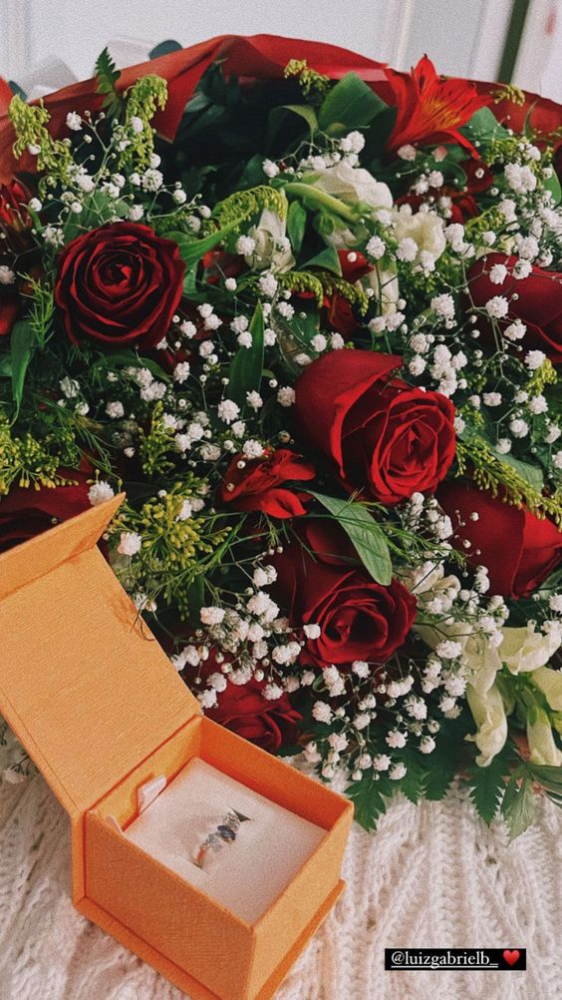
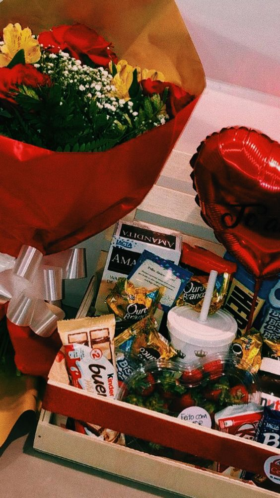
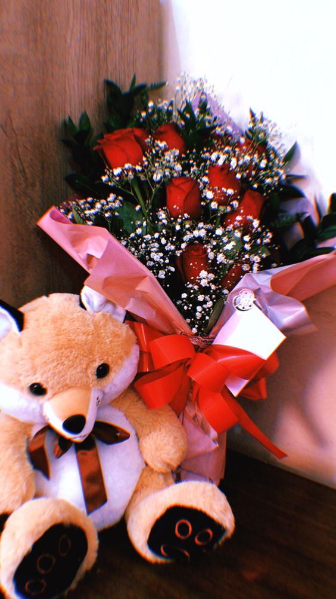

Rosas vermelhas são o famoso clássico para o pedido de namoro, além de serem as flores mais comuns e nunca saírem de moda, a cor vermelha remete ao amor.
Rosas Vermelhas

Flores Veremlhas e Amarelas

Porque não presentear com chocolates também?
Certeza que o seu amor irá amar receber esse presente.
Chocolates
Certeza que o seu amor irá amar receber esse presente.

Receber um ursinho de pelúcia é um presente muito fofo. É algo muito especial para presentear alguém que você ama.